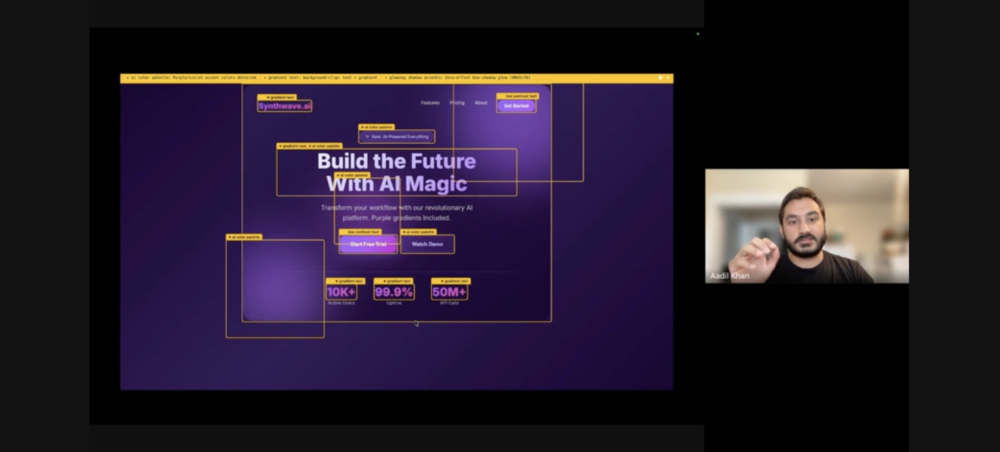
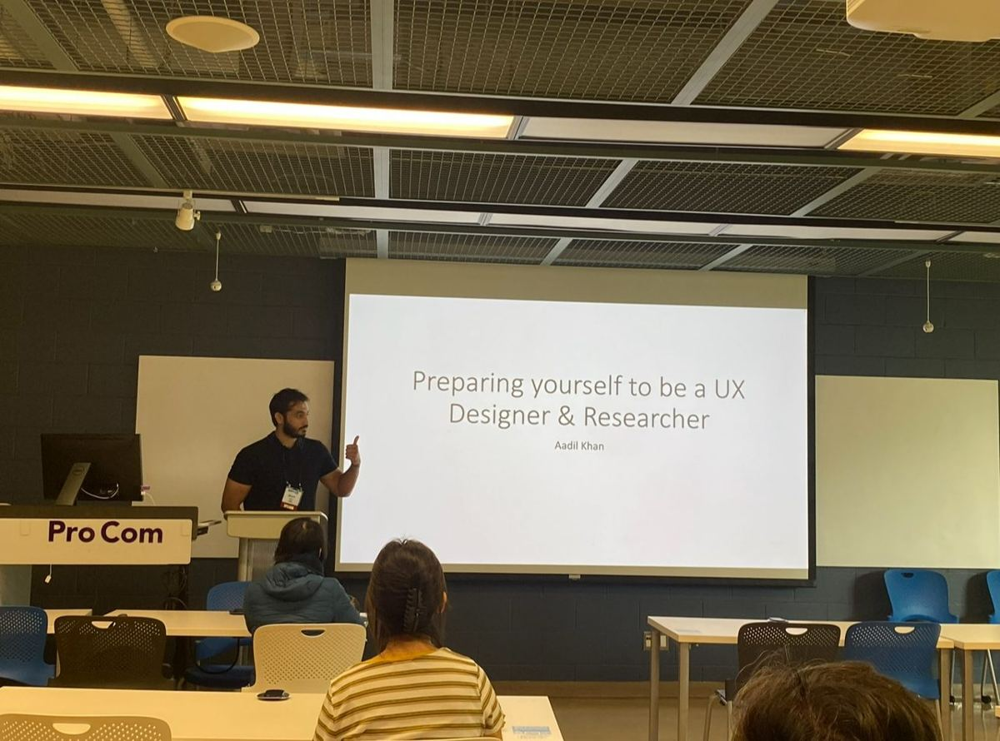

2 weeks
UX audit
I go through your product as a new user would and note everywhere it slows people down. You get a recorded walkthrough and a list of fixes, starting with the ones that matter most.
Work with me
I work with teams to improve products, teach people how to design, and collaborate on ideas worth bringing to life. Find the right starting point below.
10 yrs
UX research and design at IBM, BMO, and XE
IBM
Enterprise Design Thinking certified
10,000+
Minutes mentoring designers, as an ADPList Top 100 Mentor
Figma
Official partner, through a design venture I co-founded
Fixed scope · Fixed price
Most teams I talk to already know something’s off. Sign-ups stall, people get lost during onboarding, or support keeps answering the same questions. The team usually has a few theories but no time to test them. That’s where I come in.
Designed and researched experiences used by millions, across products generating hundreds of millions in revenue—from consumer apps to complex enterprise platforms.
That experience shapes the products I help build, the people I teach, and the ideas I share.
2 weeks
I go through your product as a new user would and note everywhere it slows people down. You get a recorded walkthrough and a list of fixes, starting with the ones that matter most.
3–4 weeks
I interview your users and come back with what they need, where they get stuck, and what I’d build next.
Your call
Have something else in mind? Tell me what you’re working on, and we’ll shape a scope that fits.
For teams & learning organizations
Help people become better designers by giving them something real to work on. I teach UX in Toronto Metropolitan University’s Master of Digital Media program and co-founded Design XP, a 12-week apprenticeship built around real client projects.




Half or full day
Hands-on research and design training for your team, taught the same way I teach graduate students at TMU.
Bring a working designer into your classroom, team, or event. Sessions on UX research, design practice, and working with AI while keeping people at the center.
Build a course or learning program around practical skills and real projects. My experience includes UX curriculum and courses for TMU, George Brown College, BrainStation, and Design XP.
From Design XP apprentices
“What set Design XP apart was that the goal was never perfection of the end product, but developing your personal design process.”
“I feel like I’m becoming more confident in my skills and starting to see how design could actually shape my career.”
For creators, brands & communities
Some projects start with a shared curiosity. I’m interested in making things with people who care about design, technology, culture, and the ways they shape our lives.
A useful tool, an experiment, or a creative project. Bring an idea we can explore and build together.
Collaborative content, interviews, and conversations that give people a different way to think about design and technology.
Community events, shared workshops, and activities where people can meet, learn, and make things.
Through Aadil.Digital, I share ideas and bring people together through community calls, workshops, and activities. With Design XP, I help people learn by building together.
Tell me what you have in mind ↗How it starts
Tell me what you’re working on: a product, a learning experience, or an idea for a collaboration. We’ll talk through what you need and decide on the next step together.
Prefer email? m.aadilk96@gmail.com